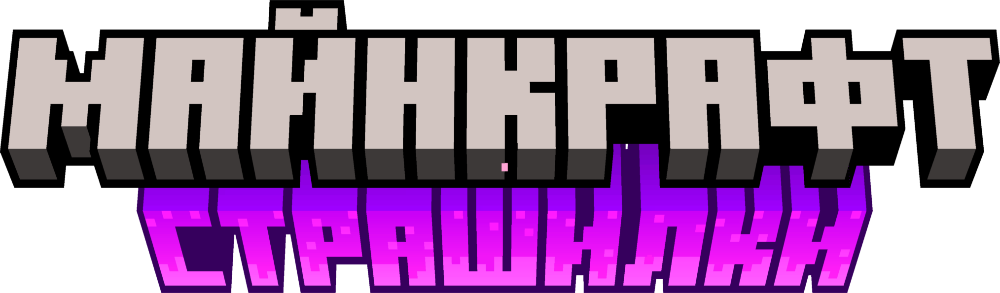

О KotikGamerz
Привет, друг! Ты попал на информационный сайт KotikGamerz! KotikGamerz это ютуб-блогер снимающий видео по
таким играм как: Minecraft, Roblox, SchoolBOY, Metel, JokerShow и множество других. Если ты попал на этот сайт
случайно, то рекомендую подписаться на мой канал в ютубе ведь там есть много всего интересного
Кликни что бы открыть Ютуб
НОВОСТИ ПО КАНАЛУ
Новая страшилка!
Опубликовано: KotikGamerz, 6.10.24, 20:21

В разработке уже совершенно новая Майнкрафт страшилка приуроченная к Хеллоуину! Страшилка будет грандиозной ведь
это мой первый КОЛЛАБ! Уже сейчас карта начинает строиться а мы готовимся к сьемкам. Коллаб будет с (неизвестно)
Подписывайтесь на канал что бы не пропустить. Примерное время премьеры 1 серии: 19-20 октября 2024 года.
Где стримы?
Опубликовано: KotikGamerz, 6.10.24, 20:21
К сожалению в ближайшее время стримы не намечаются. Началась учёба и довольно трудно совмещать учебу и стримы.
А ведь я не робот и мне тоже нужно отдыхать. Стримы будут когда то. Но не скоро.
Скоро тут появится новый контент.
©KotikGamerz Team 2024. Site created on HTML file with Notepad++. All rights reserved.